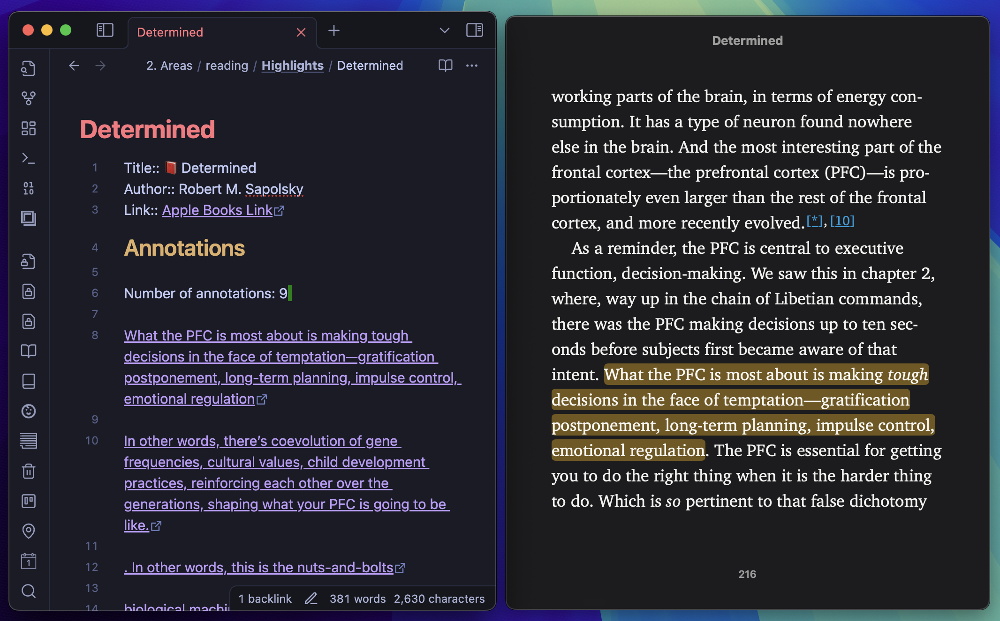
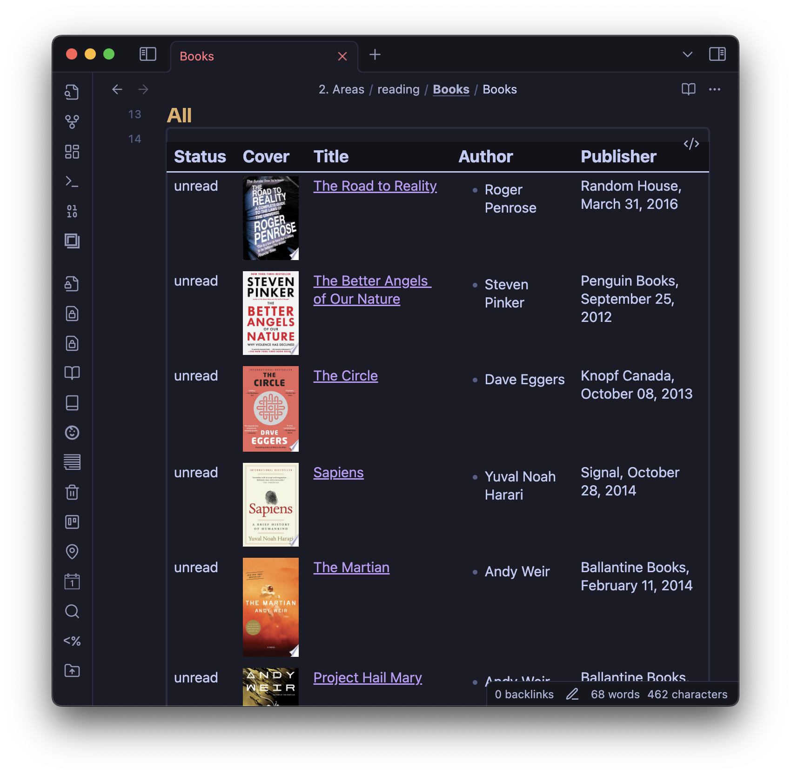
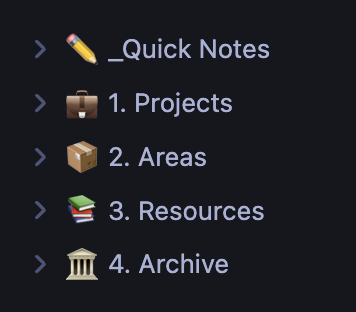
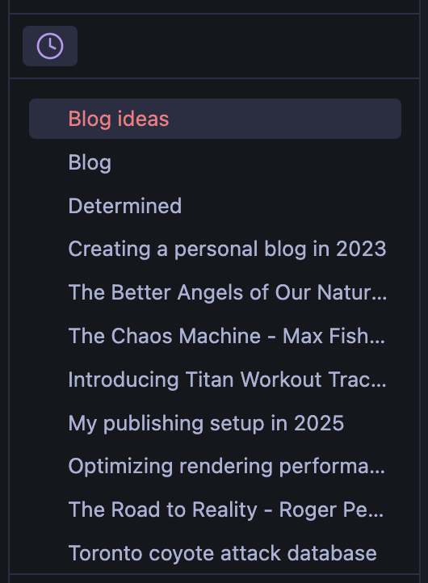
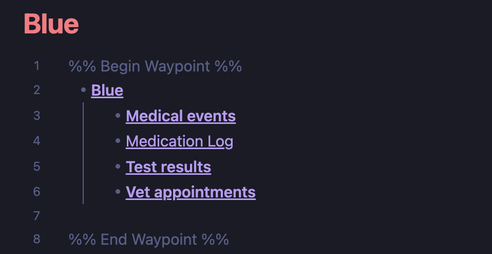

Philosophy
My overarching goals with writing notes are 2 fold:
- To help me think clearly
- To serve as a personal knowledge base I can reference later
One of the great things about Obsidian is how it’s infinitely customizable. While this is great, I also have the type of personality that finds a lot of joy in the process of hacking and tweaking things, which could get in the way of the goals mentioned above.
To keep this in check, I decided to adopt an approach where I keep the tool as vanilla as possible to start, and changing settings and adding plugins only as needed.
File organization
I use the relatively simple PARA system to organize my files. There are probably a few hundred YouTube videos that talk about file organization on Obsidian, and perhaps there’s value in exploring them in the future, but I find that this simple system works well for me for now.
The PARA system involves categorizing each file into one of four types:
- Project: anything that has an end date (eg: an event I’m planning)
- Area: anything that’ll always be ongoing (eg: hobbies, career etc)
- Resource: links to things I didn’t create myself (eg: URLs I want to go back to)
- Archive: any note that’s served its purpose and that I’m unlikely to go back to
In addition I also have a directory named _Quick Notes (the _ makes it show up at the top on my file explorer). This is where all new notes I create with CMD + N go to by default before categorization.
Settings
- All new notes to go to a
_Quick Notesdirectory (Settings -> Files & links -> Folder to create new notes in) - I use vim keybindings (
Settings -> Editor -> Vim keybindings) - Frontmatter is shown as yaml instead of as a table (
Settings -> Properties in Document -> Source) - Attachments go into an
attachmentssubdirectory in the current directory (Settings -> Files & links -> Default location for new attachments) Auto-reveal current fileturned on in the file explorer
Hotkeys
- FIles: Reveal current file in navigation -
CMD + shift + R - Navigate back:
Ctrl + o(similar to vim) - Navigate forward:
Ctrl + i(similar to vim)
Syncing and version control
I use apple devices for the most part, so I mainly use iCloud for syncing. My obsidian vault is in an iCloud directory that gets mirrored to other devices. I also back up / version control my vault using git.
Warning
If you use both a cloud syncing service and git, your
.gitdirectory needs to be outside of the directory being synced, or it may result in data loss (I’ve lost some data this way). Use the--git-diroption to set this up.
Plugins
Apple Books - Import Highlights
I do a lot of my reading on my iPad and iPhone. This plugin imports all highlights from all books I have (whether bought from apple or an .epub files opened using the Books app) into markdown notes. Clicking on a highlight even takes you to the specific spot in the book. 
Book Search
This one lets you make book notes with whatever metadata you specify (eg: title, author, cover image etc). Using the dataview plugin you can query and visualize these notes in whatever way you like, even similar to a completely offline version of GoodReads. 
Calendar
Shows a calendar view on the sidebar. I can click into a date to quickly start a daily note.
Dataview
An incredibly powerful plugin to query all your markdown notes like a database.
Folder Notes
Makes it possible to have nested notes like on Notion.
Iconize
Lets you add icons to a lot of places. I just use it for top level directories.

Janitor
Lets you find and remove empty files anywhere in your vault
Lazy Plugin Loader
Having a lot of plugins can slow down how quickly Obsidian starts, particularly on mobile devices. This plugin lets you defer loading of plugins so they happen in the background after your vault opens. I hope this becomes a built in Obsidian feature.
Natural Language Dates
Lets you reference dates using commands like @yesterday, @today etc

Obsidian Web Clipper
This isn’t technically a plugin but a browser extension. It lets you easily create clippings from websites to go back to later.
Paste URL Into Selection
Makes it possible to copy a URL from anywhere, highlight some text in obsidian and paste, converting the highlighted text into a link. Similar to how notion works by default.

Periodic Notes
Easily create notes for a day, week, month etc. Similar to the Daily Note core plugin . Integrates nicely with the calendar plugin, and lets you click on a date or week to quickly make a periodic note.
Recent Files
Shows a neat list of files I’ve opened recently on my sidebar. 
Settings Search
Makes it possible to search for any setting. This really should’ve been a core built in feature.
Waypoint
Let’s you create an automatically updating index page that lists all files in the current directory and nested subdirectories. Works well with the Folder Notes plugin. 
Webpage HTML Export
What I use to publish this website. More details here - index.